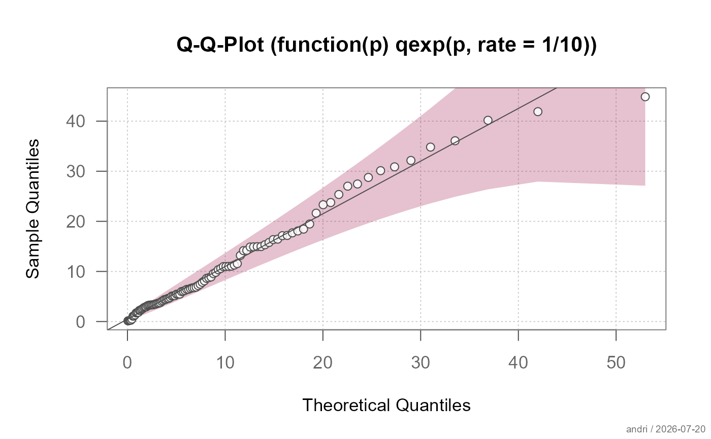
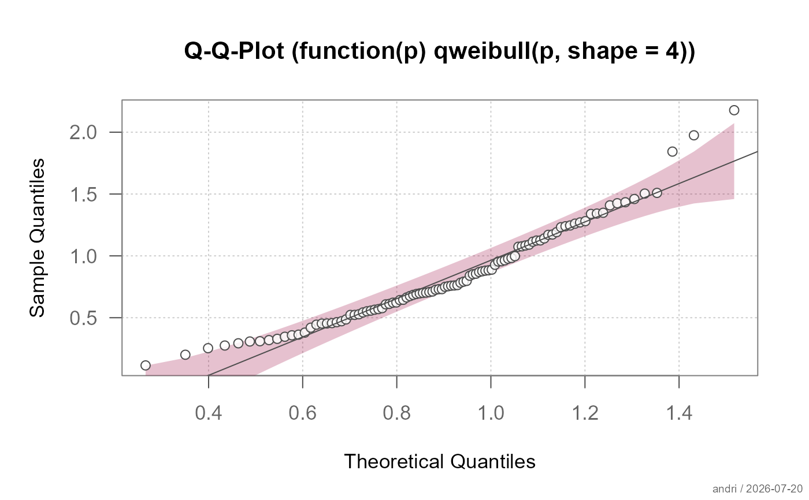
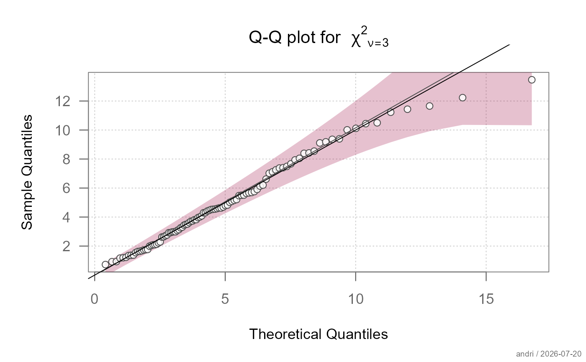
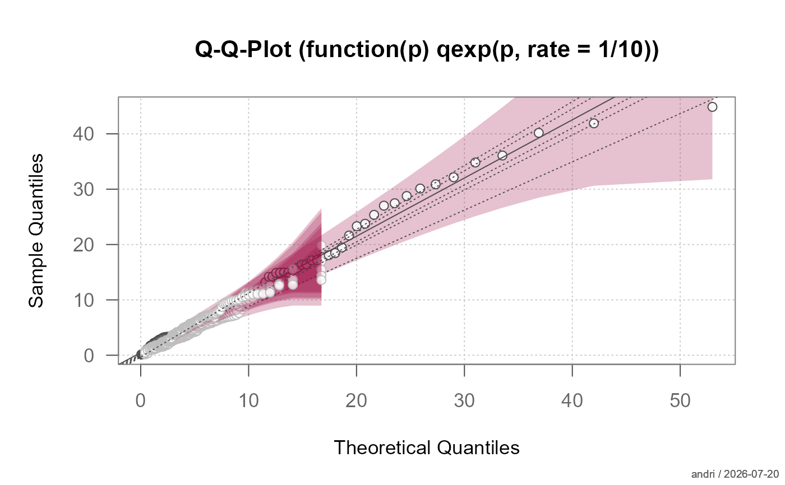

Create a QQ-plot for a variable of any distribution. The assumed underlying distribution can be defined as a function of f(p), including all required parameters. Confidence bands are provided by default.
Arguments
- x
the data sample
- qdist
the quantile function of the assumed distribution. Can either be given as simple function name or defined as own function using the required arguments. Default is
qnorm(). See examples.- main
the main title for the plot. This will be "Q-Q-Plot" by default
- xlab
the xlab for the plot
- ylab
the ylab for the plot
- datax
logical. Should data values be on the x-axis? Default is
FALSE.- add
logical specifying if the points should be added to an already existing plot; defaults to
FALSE.- grid
controls drawing of the background grid.
.useTheme(default) follows the active theme (getTheme()$grid).TRUE/FALSE/NA, or a named list, as forgrid.- box
controls drawing of the plot box.
.useTheme(default) resolves togetTheme()$box.TRUE/FALSE/NA, or a named list, as forbox.- cband
controls the confidence band.
FALSE,NULL, orNAsuppress it. A named list configures it; itsconf.levelelement (default0.95) controls the confidence level of the pointwise Kolmogorov-Smirnov-based band (conf.levelis consumed before the band is drawn and never forwarded as a graphical parameter). Other list elements (e.g.col,border) configure the band's appearance.- qqline
arguments for the qqline. This will be estimated as a line through the 25\ procedure as
qqline()does for normal distribution (instead of set it toabline(a = 0, b = 1)). The quantiles can however be overwritten by setting the argumentprobsto some user defined values. Also the method for calculating the quantiles can be defined (default is 7, seequantile). The line defaults are set tocol = par("fg"),lwd = par("lwd")andlty = par("lty"). No line will be plotted ifargs.qqlineis set toNA.- stamp
controls the corner stamp.
.useTheme(default) resolves togetTheme()$stamp.TRUE/FALSE/NULL, a string, or a named list of arguments forstamp()(e.g.list(text = "...", las = 2)).- ...
the dots are passed to the plot function.
Details
The function generates a sequence of points between 0 and 1 and transforms those into quantiles by means of the defined assumed distribution.
Note
The code is inspired by the tip 10.22 "Creating other
Quantile-Quantile plots" from R Cookbook and based on R-Core code from the
function qqline. The calculation of confidence bands are rewritten
based on an algorithm published in the package
BoutrosLab.plotting.general.
Based on code by Ying Wu
See also
stats::qqnorm, stats::qqline, stats::qqplot, theme, lines.loess
Other plot.univariate:
plotArea(),
plotBar(),
plotBox(),
plotCatDist(),
plotDens(),
plotDensBox(),
plotDot(),
plotECDF(),
plotFdist(),
plotLines(),
plotViolin()
Examples
y <- rexp(100, 1/10)
plotQQ(y, function(p) qexp(p, rate=1/10))

w <- rweibull(100, shape=2)
plotQQ(w, qdist = function(p) qweibull(p, shape=4))

z <- rchisq(100, df=5)
plotQQ(z, function(p) qchisq(p, df=5),
args.qqline=list(col=2, probs=c(0.1, 0.6)),
main=expression("Q-Q plot for" ~~ {chi^2}[nu == 3]))
#> Warning: is.na() applied to non-(list or vector) of type 'expression'
#> Warning: "args.qqline" is not a graphical parameter
#> Warning: "args.qqline" is not a graphical parameter
#> Warning: "args.qqline" is not a graphical parameter
#> Warning: "args.qqline" is not a graphical parameter
#> Warning: "args.qqline" is not a graphical parameter
#> Warning: "args.qqline" is not a graphical parameter
abline(0,1)

# 90% confidence band instead of the 95% default
plotQQ(y, function(p) qexp(p, rate=1/10), cband = list(conf.level = 0.90))
# add 5 random sets
for(i in 1:5){
z <- rchisq(100, df=5)
plotQQ(z, function(p) qchisq(p, df=5), add=TRUE, args.qqline = NA,
col="grey", lty="dotted")
}
#> Warning: "args.qqline" is not a graphical parameter
#> Warning: "args.qqline" is not a graphical parameter
#> Warning: "args.qqline" is not a graphical parameter
#> Warning: "args.qqline" is not a graphical parameter
#> Warning: "args.qqline" is not a graphical parameter
